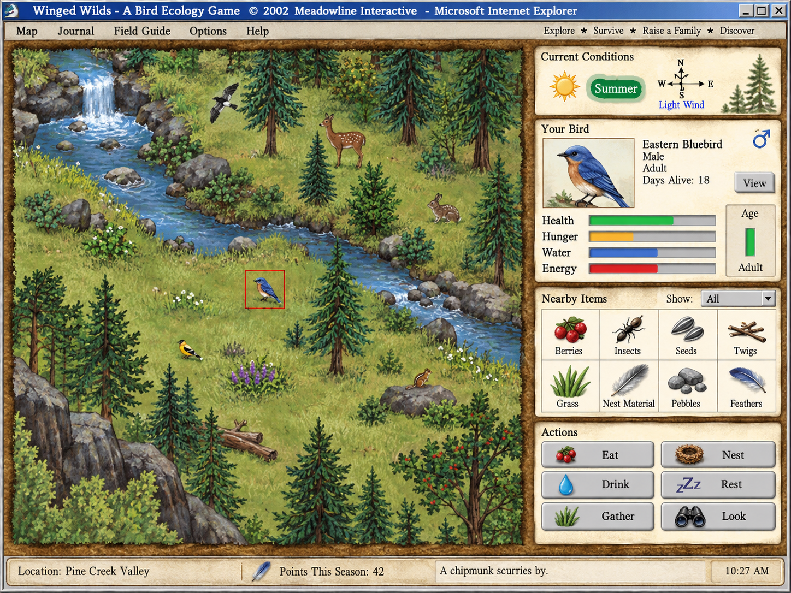

LAB / EXPLORATION
Bird Survival Simulation
Simple-Sprite Wildlife Simulation
2D Tile Map Survival System
Category
Games & Simulation
Status
Planned
Technologies
TypeScript
JavaScript
Canvas 2D
Phaser
Web Audio API
JSON
1 of 115